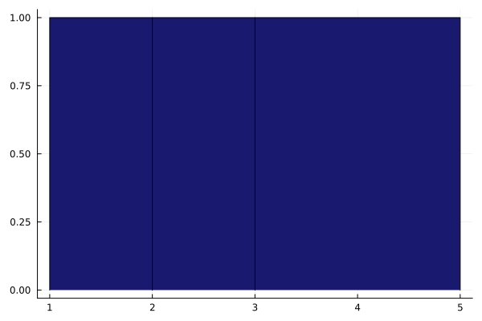
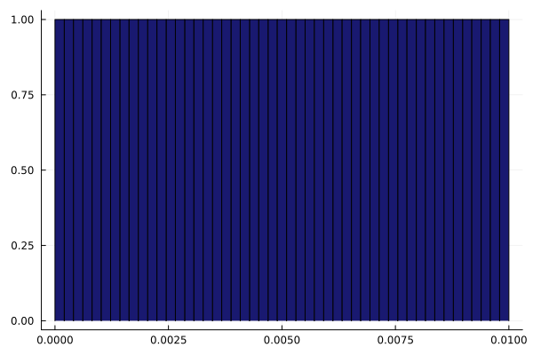
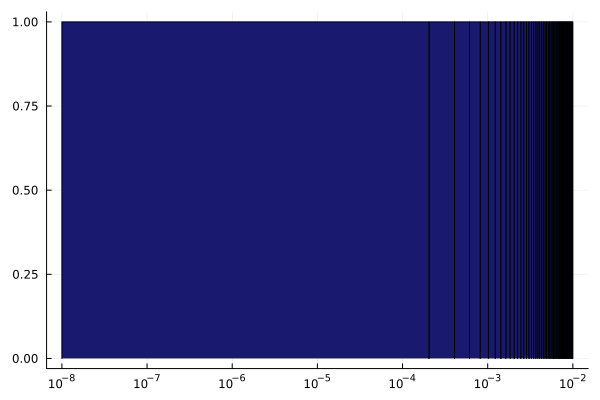

Models
Binding models
Two binding model kernels are available:
\[\text{Accumulation:}\quad x(a) = g(1-e^{-\frac{a}{K_\tau}})\qquad \text{and}\qquad \text{Langmuir isotherm:}\quad x(a) = \frac{g}{1+\frac{K_d}{a}}\]
- The Langmuir isotherm describes the equilibrium of binding (with rate $k_{\text{on}}$) and unbinding (with rate $k_{\text{off}}$) of antibodies, which is characterized by the dissociation constant $K_d = \frac{k_{\text{off}}}{k_{\text{on}}}$.
- The accumulation model describes the accumulation of antibodies (with rate $k_{\text{on}}$) during the incubation time $\tau$, which is characterized by the accessibility constant $K_\tau = \frac{1}{k_{\text{on}}\cdot \tau}$.
The accumulation model resembles the Jovanovic isotherm structurally. However, the Jovanovic isotherm describes an equilibrium of binding and unbinding processes, whereas the accumulation model describes the accumulation over time, which is stopped at a finite time $\tau$ before reaching the saturation. Nevertheless, because of the structural similarity, the accumulation model can be used as drop-in replacement to analyze equilibrium data with the Jovanovic isotherm.
Both model kernels are used for the rate constant distribution approach (Svitel et al. 2003):
\[\begin{aligned} \text{Accumulation model:} \quad x(a) &= \int_0^\infty g(k)(1-e^{-\frac{a}{k}})\ dk\\ \text{Langmuir model:} \quad x(a) &= \int_0^\infty \frac{g(k)}{1+\frac{k}{a}} \ dk\ . \end{aligned}\]
In both cases, the density $g(k)$ describes the number of epitopes that exhibit the respective constant $k$ (accessibility / affinity depending on the model). The density approach models the superposition of different classes of epitopes being present in the system at the same time (e.g. in complex cellular systems).
The accumulation model is set as default model for all methods in this package. Accordingly this documentation describes most terms, results, interpretations from the perspective of the accumulation model.
Integral approximation
The analysis of dose-response data with the models above essentially means the estimation of the density $g(k)$ from the dose-response data. To simplify the inference problem, $g(k)$ is approximated by a sum of constant functions over a disjunct set of intervals $\{I_j\}_{j=1}^m$:
\[g(k) \approx \sum_{j=1}^m g_j \cdot \chi_{I_j}(x) \qquad \text{with} \qquad \chi_{I_j}(x) = \left\{ \begin{array}{ll} 1 & \ , x \in I_j\\ 0 &\ , \text{else} \end{array} \right.\]
With this approximation, the accumulation model becomes:
\[x(a) \approx \sum_{j=1}^m g_j \int_{I_j}(1-e^{-\frac{a}{k}})\ dk\ .\]
Thus, the inference problem is the estimation of the parameters $g_1,\ldots, g_m$.
The intervals $I_j$ and the weights $g_j$ are implemented as one-dimensional grid with AdaptiveDensityApproximation.jl.
using AdaptiveDensityApproximation
grid = create_grid([1,2,3,5])AdaptiveDensityApproximation.OneDimGrid{Dict{String, AdaptiveDensityApproximation.OneDimBlock}}(Dict{String, AdaptiveDensityApproximation.OneDimBlock}("24kR4EgCB0" => AdaptiveDensityApproximation.OneDimBlock("24kR4EgCB0", AdaptiveDensityApproximation.Interval{Int64, Int64}(1, 2), ["b5QIUOdEJe"], 1.0), "ylWyb0dgAW" => AdaptiveDensityApproximation.OneDimBlock("ylWyb0dgAW", AdaptiveDensityApproximation.Interval{Int64, Int64}(3, 5), ["b5QIUOdEJe"], 1.0), "b5QIUOdEJe" => AdaptiveDensityApproximation.OneDimBlock("b5QIUOdEJe", AdaptiveDensityApproximation.Interval{Int64, Int64}(2, 3), ["24kR4EgCB0", "ylWyb0dgAW"], 1.0)))The example above created a grid corresponding to the intervals $\{[1,2],[2,3],[3,5]\}$ with weights $g_j = 1$. To view the grid properties, AdaptiveDensityApproximationRecipes.jl can be used:
using AdaptiveDensityApproximationRecipes, Plots
plot(grid)
New weights can be set with import_weights!:
import_weights!(grid, [1,2,0.5])
plot(grid)![]()
When the intervals have different lengths, the overall impact of the weights $g_j$ becomes skewed, since the term $\int_{I_j}(1-e^{-\frac{a}{k}})\ dk$ depends on the interval length. For the estimation of parameters it can be beneficial to use length-normalized parameters:
\[g_j = \frac{\lambda_j}{\text{length}(I_j)}\]
In other words, while $g_j$ is the density value, $\lambda_j$ is the number of epitopes with $K_\tau\in I_j$.
Finally, the analytical solution of $\int_{I_j}(1-e^{-\frac{a}{k}})\ dk$ requires the exponential integral function, not implemented in Julia Base (see Additional models and exact integrals to implement exact integrals). To avoid additional dependencies, this integral is approximated by
\[\int_{I_j}(1-e^{-\frac{a}{k}})\ dk \approx \text{length}(I_j) \cdot (1-e^{-\frac{a}{\text{center}(I_j)}})\]
\[\Rightarrow \quad x(a) \approx \sum_{j=1}^m g_j \int_{I_j}(1-e^{-\frac{a}{k}})\ dk\ \approx \sum_{j=1}^m g_j \cdot \text{length}(I_j) \cdot (1-e^{-\frac{a}{\text{center}(I_j)}}) = \sum_{j=1}^m \lambda_j \cdot (1-e^{-\frac{a}{\text{center}(I_j)}})\]
The weights of OneDimGrid objects are always treated as $\lambda_j$ for the analysis of dose-response data. Thus, the weights describe the number of epitopes with $K_\tau$ in the given interval, not the $K_\tau$-density value!
Obtain model functions
Having specified the intervals with a grid, the model function can be obtained with the predefined functions accumulation_model or langmuir_model as model generator. Alternatively, custom model functions can be used if they follow the structure of the predefined model functions (see Additional models and exact integrals).
model, init_params, centers, volumes = accumulation_model(grid, offset = 10)model is a ModelFunctions object from FittingObjectiveFunctions.jl, containing both the model function and the partial derivatives w.r.t. to the parameters.
init_params contains the weights of the grid, and as last element the offset if offset != nothing:
println(init_params)[1.0, 2.0, 0.5, 10.0]centers contains the center points of the intervals of the grid:
println(centers)[1.5, 2.5, 4.0]and volumes contains the lengths of the intervals of the grid:
println(volumes)[1, 1, 2]Additional models and exact integrals
Additional model functions, e.g. to use analytical solutions of the integral $\int_{I_j}(1-e^{-\frac{a}{k}})\ dk$, can be used instead of the predefined model functions accumulation_model and langmuir_model. Custom model functions can be defined by
function custom_model(grid::AdaptiveDensityApproximation.OneDimGrid ; offset::Union{Nothing,R} = nothing) where R <: Real
centers, volumes, parameters = export_all(grid)
model = @inline function(a,λ)
# Custom model function
end
∂model = Function[]
for i in eachindex(centers)
∂ = @inline function(a,λ)
# Custom partial derivatives (w.r.t. λ[i])
end
push!(∂model,∂)
end
return AntibodyMethodsDoseResponse.generate_model(model,∂model,centers,volumes, parameters,offset)
endAfter the definition, the custom_model can be used as argument whenever accumulation_model or langmuir_model are valid arguments (e.g. in DoseResponseResult).
Tips for girds
Choosing unequal interval sizes in the example above was not just for demonstration purposes. In fact, a rule of thumb for the $K_\tau$ domain is to use the concentration/dilution range of the dose-response curve, which often spans multiple orders of magnitude. Consider for example the domain $[10^{-8},10^{-2}]$:
plot(create_grid(LinRange(1e-8,1e-2,50)))
In a linear scale, this interval discretization seems to resolve the domain well enough. But plotting the same grid in a logarithmic scale leads to:
plot(create_grid(LinRange(1e-8,1e-2,50)), xaxis = :log, xticks = [10.0^-i for i in 2:8])
Equally sized intervals poorly resolve the smaller orders of magnitude. A single interval covers the domain $[10^{-8},10^{-4}]$, while almost all intervals subdivide the domain $[10^{-3},10^{-2}]$. A solution for this problem is to use logarithmically sized intervals:
plot(create_grid(LogRange(1e-8,1e-2,50)), xaxis = :log, xticks = [10.0^-i for i in 2:8])Julia provides the LinRange function to create equally spaced points in a given range. AntibodyMethodsDoseResponse.jl adds LogRange to create logarithmically spaced points in a given range, following the same general syntax: LogRange(start, stop, n_points, [base = 10]).